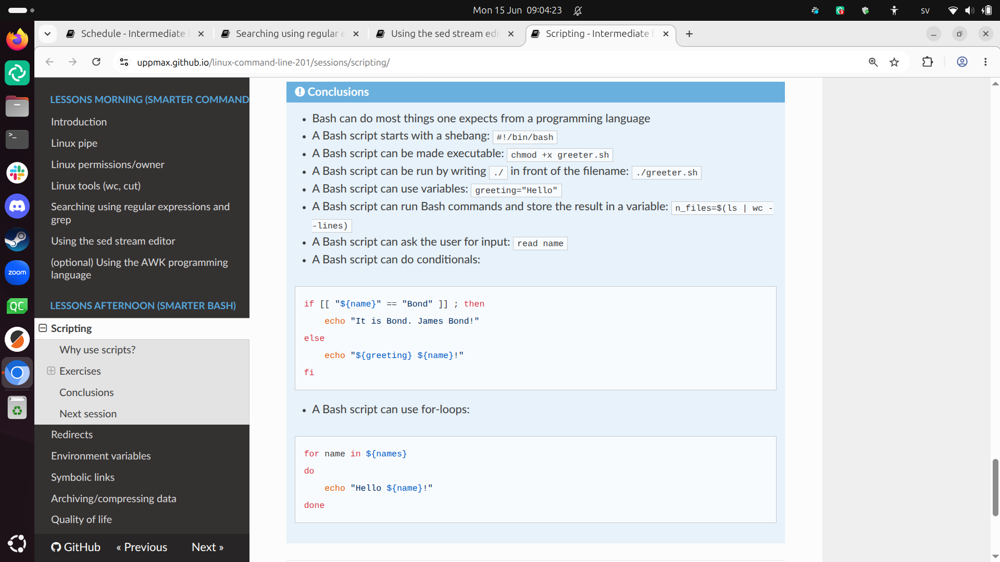
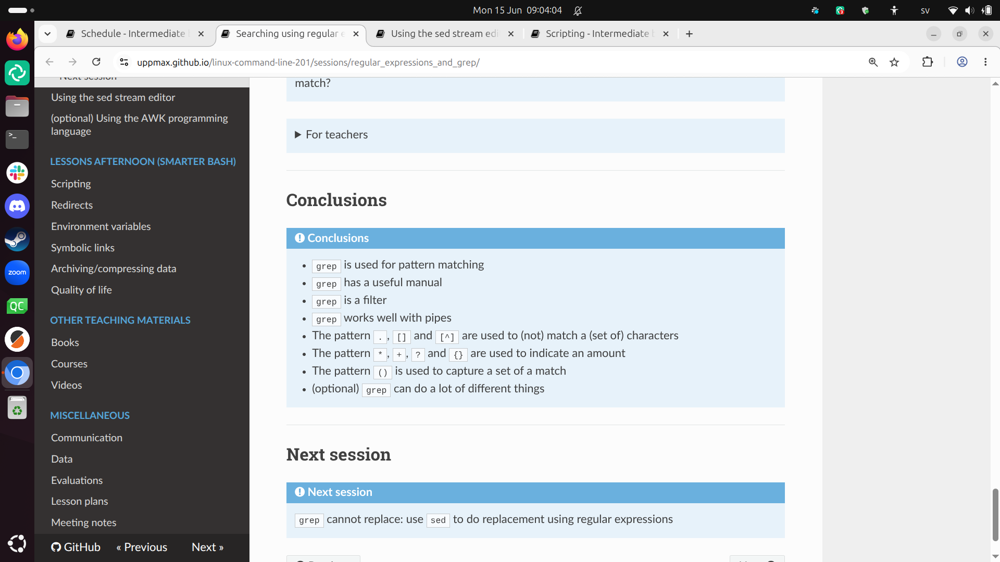
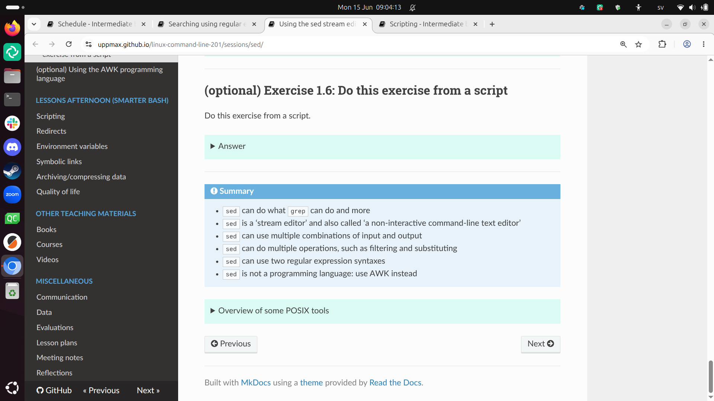

Reflection 2026-06-03¶
During teaching¶
I enjoyed the contact with the learners. I have spoken to all of them 1-on-1. There were some for which the content was too easy, whom I sent on an early break/lunch.
I do think the course name ‘Command Line 201’ is a misnomer: I feel it should be called ‘Command Line 102’, as it is quite basic what we are teaching.
- [x] Suggest to BB
What I noticed is that 9 out of 10 learners stated that, during the ‘Bash scripts’ session, that this is their first time creating a Bash script. This means they did not even remember when it was taught twice before! The other 1 learner was already experienced in Bash, so I did not ask her if she remembered the sessions on Bash.
- [x] Share with BB
I enjoyed working together with the other teacher: when we requested host/co-host Zoom right, we just did that, gave a thumbs up and gave a thumbs up back. It was smooth!
I predict at least 1 learner will write on the evaluation that the course went too slow. I agree that when being gifted like here, where we follow the pace of most of the learners, one is better off elsewhere or by self-study.
Evaluation results¶
Here I go through the evaluation results. I do fix typos.
Pace¶
- Good
- Great
Yay :-) .
- Richel is a very nice teacher
Great
- It was a bit fast. I think it would benefit from going through the exercises together briefly after we have done them each, to discuss any questions/issues in the group.
Yes, I agree I should practice my Feedback more.
-
[ ] Schedule Feedback
-
First it was i a bit fast but then it was better
I wish I knew which sessions ‘first’ included.
- Overall good but as a first timer I need to go away and consolidate
I agree practice after the course will be helpful.
- overall was good but in my opinion Birgitte goes a bit fast on the topics, especially on definitions
Not my session.
Future topics¶
- I would like future training on Bash scripting for HPC workflows, job submission scripts, environment modules, data processing with grep/sed/awk, and practical examples for scientific computing.
Here I go through these suggestions:
- Bash scripting for HPC workflows: this is an interesting idea, now we do this in a lot of courses (e.g. HPC Python, or Intro to Bianca), but not as a standalone course
- job submission scripts: we do this in all courses, but not as a standalone course
- environment modules: no idea
- data processing with grep/sed/awk: I think this would be a bad idea, when there are high-level programming languages at your disposal. The AWK course, however, does teach this
-
practical examples for scientific computing: we do this in some NBIS courses
-
[ ] Consider ‘Programming Formalisms for HPC’
Back the suggestions by the learners!
- More bash scripting
This is already considered.
- AI, Data Analytics, ML, Docker etc.
We teach some of these already.
- [ ] Consider ‘Docker for HPC’
Other comments¶
- I really appreciated the hands-on structure of the course. The exercises were useful and helped me understand Linux commands by practicing them directly in the terminal. The explanations were clear, and the pace was generally good. As a suggestion, it would be helpful to include a short summary table of the most important commands at the end of each session, with examples and common mistakes. This would be especially useful for beginners or participants who are new to HPC environments. Overall, I found the course very helpful and well organised. Thank you for the training.
I see I already do a mediocre job at this:



The sed session is the worst in this case: it does not show actual
usage of sed.
I think I can expand a bit on this. Adding common mistakes is something I consider: I have exercises exactly for encountering common mistakes.
-
[ ] Consider expanding summary at the end of a session
-
All was just fine thank you
Conclusion¶
I should continue working on my Feedback.